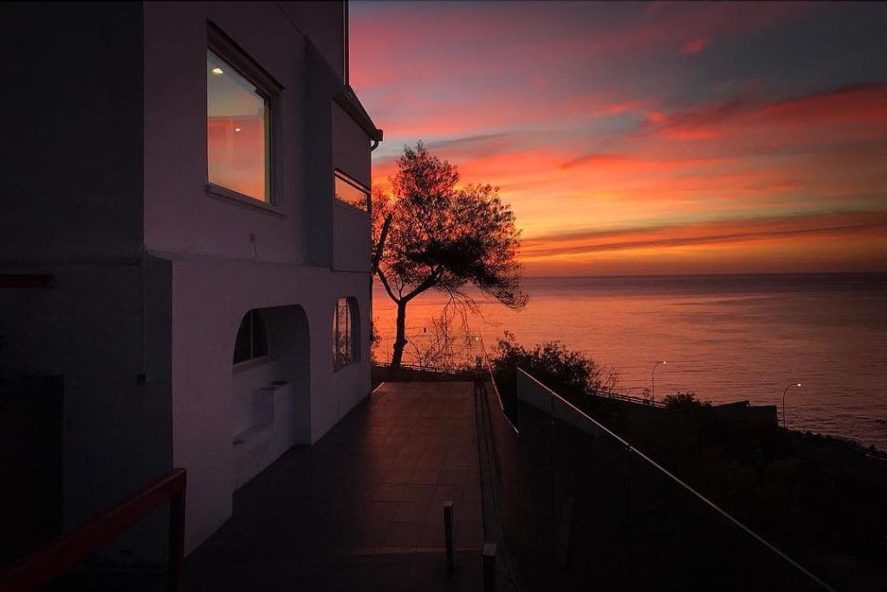

Mi escuela
La sede de la Escuela de Arquitectura y Diseño se encuentra ubicada en la calle Matta, Recreo. La casa original fue construida alrededor de 1940 con fines residenciales conforme a su primera recepción municipal y fue adquirida por la Universidad en el año 1951 bajo la rectoría del R.P. Jorge González, quien en su momento dijo que… “la ubicación está muy de acuerdo con los ideales de un arquitecto que debe ser un hombre que tenga visión amplia y que mire el mar”. Hasta el día de hoy el edificio mantiene la tipología de una residencia de estilo neocolonial y sus recintos han sido alterados conforme a los requerimientos educacionales. Asímismo, durante los años 90-95 se realizó una serie de transformaciones en la propiedad de Matta 12, que incluyó modificaciones en sus espacios exteriores.
